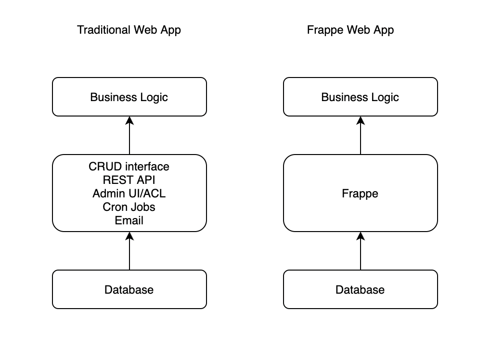

In Praise Of Frappe Framework
Introduction
Frappe framework1 is a low code, batteries included web framework to rapidly building web applications.
In this article, let's take a look at distinct features of Frappe framework and how it stands out from popular frameworks in Python/JS ecosystem.
Meta Data Driven Architecture
There are less open source frameworks which are driven by metadata.
Even though there are frameworks which are driven by metadata, they don't have an UI to configure the metadata. Frappe provides web UI to manage the metadata. This eliminates the need to code. Data modelling can be done directly from web UI without writing any code. With some training, even non-developers will be able to manage the application.
Low Code Framework
When building a web application, majority of the time is spent in setting up CRUD interface, APIs, ACL, cron jobs etc and only a small part of the time is spent on the business logic of the web application. Frappe, by including all batteries and providing an Admin UI for configuration, eliminates this majority of the development work.

This helps in rapidly building the web application without wasting time on standard things.
REST API
Frappe can be used as an alternative to Postgrest, prest or other similar REST API generation tools as it provides REST API out of the box. If you building a mobile app, then Frappe REST API can come handy at many places.
Conclusion
We have seen several advantages of using Frappe framework when you are building a web and/or mobile application. If you want to rapidly develop your nextproduct, try out Frappe framework.

Written by
Chillar Anand
Musings about programming, careers & life.